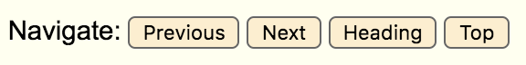

Open index.html in Chrome (the activity may have limited compatibility in other browsers). NOTE: If you already feel comfortable using a screen reader on your machine, open index_no_screenreader.html instead.
Also open the following files in your favorite text editor: main.js, main.css, index.html (or index_no_screenreader.html depending on the file you opened in Chrome above).
Activity Tips
Follow these tips to get the most out of these activities!
Don't use inline CSS (style="color:red;margin:5px;") when you're modifying HTML! This is not best practice, and may result in bugs on this website due to CSS precedence issues.
Some of the exercises contain blue buttons with explanations. Read these! They're packed with information.
If you get stuck, raise your hand for help, ask your neighbors, or (worst case) take a peek at the answer key located in the solution directory.
Activity 1
You'll be using the index.html (or index_no_embedded_screenreader.html) file you have open in Chrome for this activity. On index.html you should see a lightweight embedded screenreader across the bottom of the page, which which was originally built for an awesome Udacity course on web accessibility (see link in resources below).
Use just the screen reader shortcuts (displayed in the image below), as well as the enter, tab and shift+tab keys to explore the HTML page you have open in your browser. To simulate how a user relying on a screen reader would interact with the page, don't use your mouse!

This table contains all the shortcuts you'll need to use as you interact with the page:
Shortcut or button
Functionality
Tab key
Navigate to next interactive element
Shift + Tab keys
Navigate to previous interactive element
Enter
Click on selected links or buttons
Headings button
Navigate to next heading (e.g. h1, h2, h3 elements)
Next button
Navigate to next element
Previous button
Navigate to previous element
Are you able to interact with the page using just your keyboard as effectively as a sighted user using a mouse would be able to?
Remember that there are some things about this page that are purposely broken from an accessibility standpoint. If you notice any, note them down; you'll get a chance to fix some of them in exercise 2.
Here are some examples you can try:
Try to select the "BUY" button to buy an item.
Try checking the "blur" checkbox at the bottom of the page, then see if you're able to get a feel for the page's structure using the "Previous" and "Next" screen reader shortcuts.
What differences do you notice between using "Previous" and "Next" screen reader shortcuts to navigate the page versus using the "tab" and "shift+tab" keys?
See if you can tab through each item in the page.
Once you've finished exploring, sit tight and we'll let you know when it's time to start Activity 2!
Activity 2
For this activity, you'll still need the HTML file open in your browser from Activity 1. Also, make sure you have 3 files (the HTML, Javascript, and CSS files) open in a text editor. Check out the Quick Frontend Dev Intro by clicking the button below if you need help with that!
We'll be fixing accessibility issues in this activity.
You'll need to use your text editor to make modifications to the HTML, Javascript, and CSS files (but mostly just the HTML). To test the changes you have made, save the files and then refresh the HTML page you have open in your browser.
Text Editors
There are many text editors available but for simple HTML/CSS/JS work, you don't need anything complicated - as long as you can edit and save, that's all you'll be needing. Feel free to use what you are already comfortable with or something simple like TextEdit (Mac) or Notepad (Windows)
Note: If you're using TextEdit, make sure you can edit HTML with it. Go to TextEdit > Preferences > Open and Save tab, and check the box for "Display HTML files as HTML code instead of formatted text"
HTML, CSS, JS... 🤔
At the risk of oversimplification:
HTML provides the structure of a page. It describes what a page contains and holds the main bulk of the content. You can think of it as a skeleton. HTML files are of the format *.html. Check out our very own index.html!
CSS describes how the page appears both to sighted as well as non-sighted users. People most often use this to make things look nice but you'll see through today's exercises how CSS actually plays a part in describing what is accessible to users. CSS files are of the format *.css. Take a peek at main.css!
Javascript (JS) is the 'magic'. It allows sites to do a multitude of things - to respond to user actions, to create
and modify what appears on the page. There's a whole lot that it can do and for the purposes of this exercise, we'll be seeing how javascript helps shift focus around the page. JS files are of the format *.js
Modifying Content
Open a file (we suggest index.html!) in your text editor of choice
Open the same file in Chrome
Change something (maybe some text?)
Save the file in your text editor
Go to the Chrome tab with that file open
Refresh the page and see that your changes have appeared!
Exercise 1: Headers
Screen-reader-users rely on screen readers vocalizing what types of elements they are interacting with (e.g. "button" or "header"). Without these vocalizations, it's more difficult for users to make their way around a page and distinguish between different kinds of content.
Real screenreaders have a variety of keyboard shortcuts used to navigate different kinds of elements on a page (e.g. 'b' might cycle through all buttons, or 'h' through all headers). The heading shortcut is very important for building a mental map of how the page is laid out, and help make the page faster to navigate as users can quickly skip to the content they are interested in.
Use the "heading" button at the bottom of the website to navigate all of the headers on the page. Notice that this allows you to navigate most of the headings on the site -- except for the site title (which reads "Online Garage Sale)! Take a look at the HTML for the headers to see if you can figure out what's wrong with the site title and fix it.
Text on a page must be identified as a header for a screen reader to recognize it. In the HTML file (index.html), you'll notice that most header text is wrapped in a header tag (h1, h2, h3, etc). If you wrap the site title in h1 tags, it will become navigable using the "heading" button.
Main takeaway: Using proper HTML markup matters!
Exercise 2: Tabbing
Screenreader and non-screenreader-users alike often use tab and shift+tab for navigating between interactive elements. It's important to always make sure that this functionality works correctly in addition to navigating by screenreader shortcuts.
Try using the 'tab' key to navigate the demo page. You'll notice that the "Hand Painted Jar" cannot be focused. Compare the untabbable element to other elements on the page and see if you can figure out how to make it tabbable.
Some elements, such as buttons and form elements, are tabbable/focusable by default. If you want other HTML elements to be tabbable, (e.g. "div" or "span" which are more often text elements not interacted with by mouse or keyboard) you can give them a tabindex attribute.
The tabindex HTML attribute defines the navigation order for focusable elements. In addition to giving non-focusable elements the ability to gain focus, it can be used to remove that ability from normally focusable elements.
Possible values for the tabindex attribute are:
tabindex="1"
A positive value for the tabindex defines an explicit navigation order, and makes the element focusable if it is not already (not recommended, for reasons described below).
tabindex="0"
A tabindex value of 0 does not change the natural navigation order of an element, but makes it focusable if it is not already.
tabindex="-1"
A tabindex value of -1 makes an element unable to gain focus using the "tab" key. However, the element can still receive focus programatically, using javascript.
By default, the navigation order for elements on a page is left-to-right and top-to-bottom. A positive tabindex value allows the natural ordering to be modified. This is not recommended, especially for HTML pages with focusable elements (like buttons or input fields), since it results in unexpected jumps in focus.
Imagine if hitting tab caused focus to jump from the start of the page to an element at the very bottom of the page (this is especially jarring for fully or partially-sighted users). Instead of manually changing the natural ordering, consider changing the actual HTML structure of the page to produce the desired navigation order.
Exercise 3: Broken Buttons
To buy an item on this page, a user must select the "BUY" button. Users who are using a mouse may select this button using their mouse. Users who are using the keyboard, however, must be able to interact this button by moving focus to it and using the "enter" key to select it.
Try using the tab key to navigate to the "BUY" buttons. You'll notice that these buttons cannot gain focus. Since the buttons can't gain focus, a user navigating with a screen reader or keyboard is unable to interact with them.
If you hover over one of these buttons with the mouse, you'll also notice that the cursor doesn't change to the "default" cursor that is typical of buttons. Why do you think this might be (hint: take a look at the HTML)? Modify the HTML to see if you can fix the "BUY" buttons.
These buttons do not work as expected because they are actually "div" elements styled to look like buttons in CSS, not actual buttons. Try changing the buttons on this website from "div" elements to "button" elements. This includes the submitButton, dialogCloseButton, and all buyButton elements.
Test to see if this worked by using the "tab" key to navigate all buttons. Notice how the screen reader now vocalizes that they are buttons (e.g. "Buy, button")!
Exercise 4: ARIA labels
Open the buy dialog and use tab to navigate to the "X" button. If you completed the last exercise, this button should now be navigable. Does the screen reader's vocalizattion of the button help determine what the button's purpose might be? You'll notice that the screen reader just describes the button as a "button button", which is not a helpful description.
An aria-label can be used to attach an alternative description to elements. This is particularly useful when the text inside an element is not sufficient to describe the element, as is commonly the case with icon buttons. Use this attribute to fix the vocalization of the "X" button inside the buy dialog.
Adding "aria-label='Close button'" to the "button" tag should fix the "X" button's vocalization.
Exercise 5: ARIA roles
Sometimes, for whatever reason, you can't use the correct native HTML elements. You may need to support legacy browsers that will have issues with the new HTML element, or there are other technical limitations. In these cases, you can use an ARIA role to still get the proper screenreader vocalizations. Let's try it out!
Take the first button you modified in exercise 3 (the button corresponding to the elephant figurine), change it back to a div, and add role="button" as an attribute. How do you think this might be different from a native button element?
There are several problems with this button:
The button is not focusable (needs to be fixed with tabindex)
The button does not have the default cursor (needs to be fixed with css)
The button does not get clicked if the user uses the enter key (needs to be fixed by adding a javascript event handler)
The role does make sure that the screenreader vocalizes the div as a button, but, on its own, is not sufficient to make this element behave like a button.
Remember that aria labels may change what the screenreader vocalizes, or whether they are navigable using certain screenreader keyboard shortcuts, but they do not affect browser functionality. When you use a role instead of a native element, all the default browser behavior also needs to be replicated. Whenever possible, it's far better to just use a native element instead, which already has all the correct behavior by default.
Exercise 6: Visibility
You have probably noticed that there's an invisible dialog at the bottom of the screen that gets vocalized even though it's not showing. To reproduce this issue, try using tab to navigate though all the items on the page, and notice that there are a few items at the very end that are invisible to the eye, but navigable by screen reader.
This is problematic, since non-sighted users will assume that the dialog is visible (and it may not function correctly since the developer did not intend for it to be interacted with in this state), and users with some vision will be confused when an element that they can hear is not visible on the screen.
Try hiding the dialog from screenreaders. There are several different solutions! Hint: Try taking a look at main.css.
Here are three different solutions to solve this issue:
Hide completely with CSS: For some reason, the developers of this site used z-index:-1 to hide the dialog instead of just using display:none. Both display:none and visibility:hidden will hide elements both visually and from screenreaders.
Lowering opacity to 0 using CSS, which will position the dialog off-screen, or adjusting z-index to hide it behind something else will NOT hide the dialog from screenreaders.
IMPORTANT: If you used pure CSS to hide the dialog, make sure you modified the hidden class in main.css instead of adding an inline style, so that the dialog will not be hidden when you click the "Buy" button.
Hidden attribute: The HTML hidden attribute will similarly hide things both visually and from screenreaders. However, there are some limitations on its intended use; see the MDN documentation for more details. Also, this attribute will need to be added and removed in Javascript when the dialog is shown or hidden.
Hide from screenreaders with aria-hidden: If for some reason display:none or visibility:hidden cannot be used, the element can also be hidden by adding aria-hidden="true" to the div. This attribute will need to be added and removed in Javascript when the dialog is shown or hidden (and one of the other approaches is preferable).
Exercise 7: Dialogs
Using a screen reader, navigate to the "buy" dialog and tab through the various input fields inside the dialog. You'll notice a few issues with navigating the dialog using the screen reader, such as:
There is no indication or announcement by the screen reader when the dialog opens.
Focus is mismanaged. Once the dialog opens, focus is still unexpectedly in the background of the page.
Fix the dialog using a combination of HTML and JavaScript. This exercise is a little tricky, so feel free to click the button below for help and/or take a look at the solution directory!
To fix this, the dialog must have correct labels and keyboard focus must be properly handled. Let's start by learning how to add proper labels to the dialog. First, a dialog must have the role="dialog" attribute. For sighted users, the dialog is identified by, or labelled by, its title. For screen readers to be able to associate the dialog with its title, we must use an aria-labelledby attribute, with a value corresponding to the id of the dialog's title element ("dialogTitle"). This attribute maps the dialog element to its title.
When selecting the "BUY" button, you'll notice that focus remains in the background of the page. For the best user experience, focus should move to inside the dialog. The page's background should not be interactive using a keyboard. The steps below will fix this issue:
The dialog must be programatically focusable, using the tabindex="-1" attribute.
When the dialog opens, we must programatically move focus to the dialog element using javascript. The "showDialog" function in main.js must be modified to achieve this.
When the dialog closes, we must move focus back to the main page programatically using javascript. The "hideDialog" function in main.js must be modified to achieve this.
To make sure that a user cannot use "tab" to navigate away from the dialog, we must capture focus inside the dialog. Using javascript, we can make sure that the tab key can't be use to move focus outside the dialog when it's visible.
Dialogs can be much more complex than the example on this page. To learn more about making dialogs compatible with screen readers, check out this guide.
Bonus Exercise 8: Advanced ARIA
ARIA comes in very handy when you're implementing a complex widget for which no native markup exists. For instance, if you're implementing a slider or an autocomplete, you need some way of concisely communicating to the user what the widget does and how to interact with it.
You'll notice that at the bottom of the "BUY" dialog is a tab widget. However, without aria roles and properties, screenreader users may not know how to interact with it. Using the ARIA spec, try adding the proper ARIA markup!
Hint: You'll need to use javascript to update the markup when the tab selection changes.
Here are the ARIA roles you should have added:
role="tablist" on the div containing the buttons
role="tab" on all the buttons
role="tabpanel" on the divs containing the tab contents
For ARIA states and properties:
Each button should have an aria-controls property on it to associate it with its tabpanel. E.g.
<button role="tab" aria-controls="returns-tab">Returns</button>
While this will not have any effect for our simple screenreader, with some screenreaders this will allow users to use a keyboard shortcut to jump between the tab and the content it controls.
Ideally, there would be an accessible name for the tabpanel as well. You have a few options for this:
Add an aria-label, for example aria-label="Returns"
Similarly, you can use aria-labelledby to set the vocalized description to be the same as the default description for another element. For example aria-labelledby="returns", where "returns" is the id of the returns tab. This will vocalize something like "returns, tab" for the tab itself and "returns, tabpanel" for the tabpanel.
aria-selected="true" should be added to the currently selected tab, and aria-selected="false" should be added to all tabs that are not selected. When a new tab is selected, javascript should be used to change this value for all the tabs.
For a complete, implemented solution, see the ARIA authoring practices example here, which this exercise is based on.
Bonus Exercise 9: Color contrast
Even though we've fixed the functionality of the buttons, they're still not quite fully accessible due to their low color contrast. The gray text (#808080) is difficult to discern from the blue (#0000FF) background.
Try different color combinations and modify the color or background-color attributes on the buttons to get a better color contrast ratio!
WCAG 2.0 level AA requires a contrast ratio of at least 4.5:1 for normal text and 3:1 for large text. Level AAA requires a contrast ratio of at least 7:1 for normal text and 4.5:1 for large text.
Large text is defined as 14 point (typically 18.66px) and bold or larger, or 18 point (typically 24px) or larger.